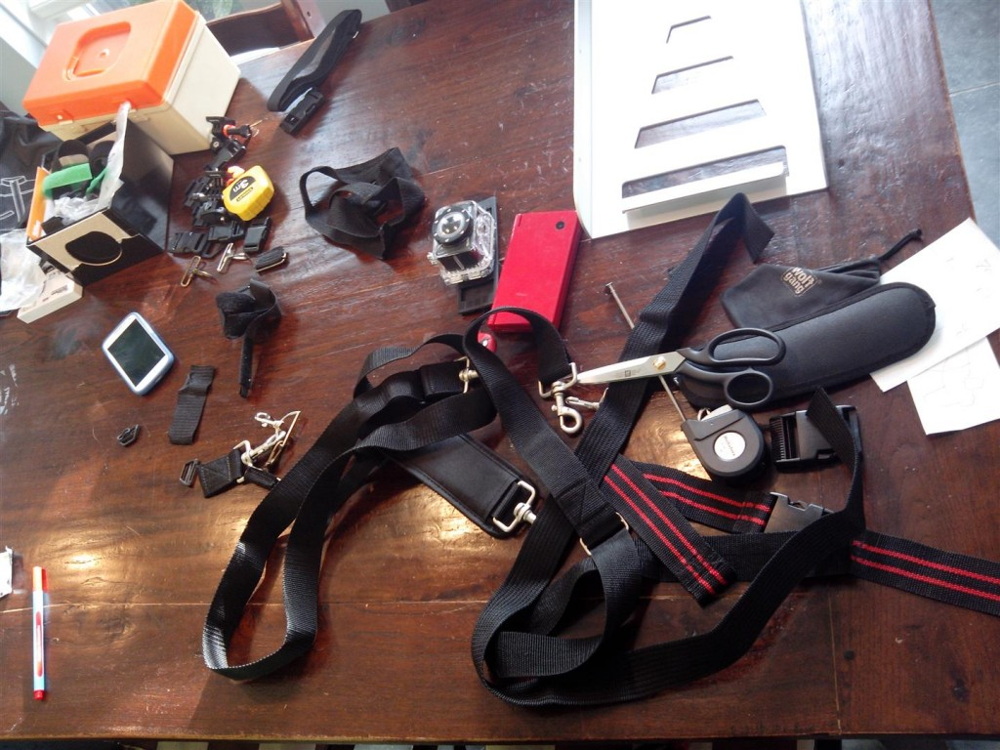
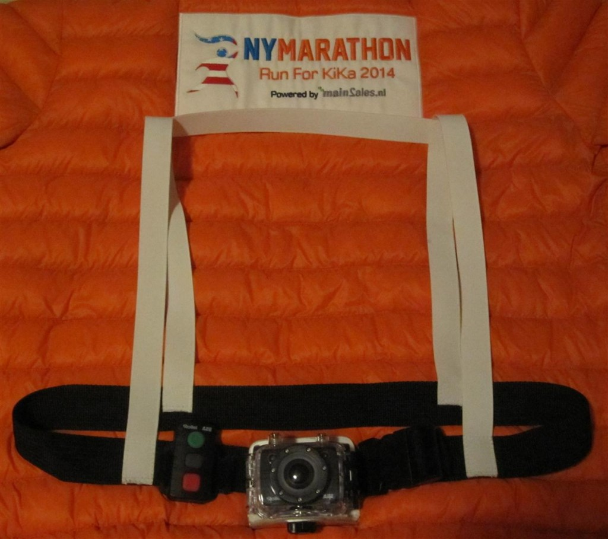
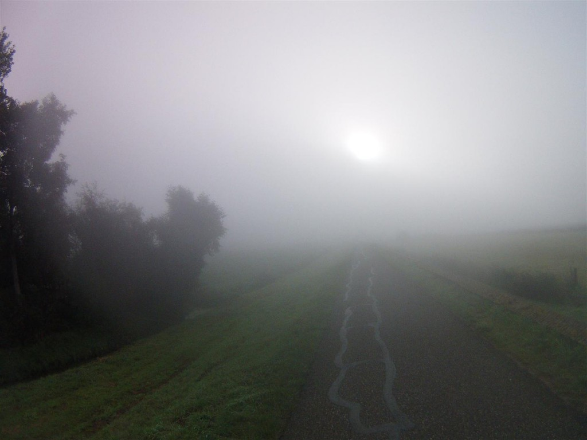

Op deze pagina vind je het laatste nieuws over mijn RunForKiKaNewYork. Wil je reageren op het nieuws gebruik dan de Leave a Reply onder aan deze pagina.
20141029
Prachtig stuk in De Swollenaer.
De benodigdheden
voor tijdens het lopen zijn verzameld.
Voor de zekerheid maar pet met korte broek èn muts,
lange broek en handschoenen mee.
De app voor het volgen van de Runners is hier
beschikbaar.
Hiermee kun je mij
(en nog 9 anderen) live volgen.
Via de app krijg je de tijden van de start, iedere
5K, halverwege en de finish.
Via internet (Runner Tracking) krijg je de tijden van de start, ieder mile, iedere 5K, halverwege en de finish.
Mijn startnummer is 46031 en volgens mij start ik
om 10.30 uur (16.30 NL-tijd) Wave 3 kleur Oranje op
het bovendek van de Verrazano-Narrows Bridge.
Hopelijk ben ik om ongeveer 15.00 uur (21.00 NL-tijd)
gefinished .
Zin in !!!
Iedereen bedankt voor alle ontvangen wensen, zowel
“live” als via kaarten, mailtjes, sms-jes, WhApp-jes
en facebook !!!
Het is heel gaaf te merken dat er zo hééél veel
mensen meeleven.
20141027
Prachtig stuk in De Swollenaer.
Op de voorpagina een
fotootje en de aankondiging “Henkjan holt in New
York”
en op pagina 5 een groot stuk mèt foto “Henkjan
Ruijfrok loopt als goldrunner de New York Maraton
voor KiKa”
20141026
Laatste duurloop.
Vandaag de laatste
lange duurloop voor de marathon: 90 minuten.
Ik heb de loop opgedeeld in 2x 44 minuten + 2 minuten
herstel.
Vandaag géén HenkjanHoltHaasvlag maar de outfit zoals
volgende week in New York.
Voor het eerst testen met de ActionCam in het harnas en ook voor
het eerst Energize Cookies & Cream van PowerBar
gehad. Was lekker (zoet).
Was lekker (zoet).
Verzamelen in Westenholte.
En op het
teken van de trainer inlopen.Tijdens
het inlopen het contact met de groep al verloren.
Zij gaan vééél sneller.Samen
rekken en strekken.
Het was heerlijk weer om te lopen.
Zowel in Wilsum als
terug in Westenholte een stukje verkeerd
gelopen.
Terug bij de auto stond er 18 km op de
teller.
Ik heb keurig een “Negative
Split”
gelopen.
– 1e 44 minuten in 9.94 km/uur
– 2e 44 minuten in 10.514 km/uur.
Onderweg foto´s maken
gaat prima. Ik heb de camera zo ingesteld dat er 3
foto´s per seconde worden gemaakt, en bij de meeste
is één van de drie foto´s scherp.
De onderweg gemaakte video´s bewegen veel te veel en
daar is niet naar te kijken.
Conclusie: ActionCam in harnas is een prima oplossing
voor het maken van foto´s en ook het draagcomfort is
prima.
20141025
Harnas voor ActionCam.
Vanmorgen vol ideeën met ActionCam + allerlei
verzamelde banden, gespen, sluitingen en een stuk
aluminium naar Ciska.
Na een uitgebreide brainstormsessie besloten hoe we
het harnas voor mijn ActionCam gaan maken.
Ciska aan de slag met met banden, elastiek en
sluitingen en ik met het aluminium.
Na wat noeste arbeid hebben we een mooi harnas in
elkaar weten te zetten waar ik erg blij mee ben.


Morgen tijdens de laatste duurloop van 90 minuten
testen of hollen met de Cam bevalt.
@Ciska: Hartelijk dank voor de pretttige
samenwerking, je ideeën en het in elkaar zetten van
het harnas !!!
20141024
Ontspannen gelopen.
Vanavond lekker
ontspannen gelopen. Op het
programma stond 2x 40 minuten.
1e keer 40 minuten (ronde 2) inclusief
Mastenbroekerbrug, 2x Westenholterbrug en 1x
fietsbrug Westenholten in 9.96 km/uur.
2e keer 40 minuten (ronde 4) inclusief 1x fietsbrug
Westenholten, 2x Twistvlietbrug en 1x
Mastenbroekerbrug in 10.320 km/uur.
Het was heerlijk weer en ik heb lekker ontspannen
gelopen.
Nauwelijks last van linker voet en geen last van
rechter grote teen.
2x 40 minuten op het programma. Ronde 2 inclusief
Mastenbroekerbrug, 2x Westenholterbrug en 1x
fietsbrug Westenholten in 9.96 km/uur. Ronde 4
inclusief 1x fietsbrug Westenholten, 2x
Twistvlietbrug en 1x Mastenbroekerbrug in 10.320
km/uur. Heerlijk weer en lekker ontspannen gelopen.
Nauwelijks last van linker voet en geen last van
rechter grote teen.
20141025
Opnieuw post van De Wilgenburg.
Team van basisschool De
Wilgenburg:
Hartelijk bedankt voor jullie prachtige kaart !!!
Heel fijn dat er (nog) aan ons gedacht wordt !!!
20141022
Wie o Wie ?!?!?
– Is handig met naald & draad
Èn
– heeft zaterdagmorgen tijd
Èn…
– heeft zaterdagmorgen zin
Om mij te helpen ?!?!?
Helpen met het maken van een namaak GOPRO Chest Mount Harness voor mijn ActionCam.
Dan kan ik tijdens mijn laatste duurloop van komende zondag nog testen of het bevalt om met een ActionCam te hollen voordat ik in New York van start ga …
20141022
Vandaag weer getraind 
Vandaag weer
gelopen
met de clinicgroep; interval 6x
1000 meter met 500 meter rust.
Ik heb lekker
ontspannen kunnen lopen met best wel goede snelheden
(12.2, 12.2, 12.1, 11.8, 12.2 en 11.5 km/uur).
Van mijn rechter teen heb ik geen last meer. De teen
ziet er niet uit maar doet gelukkig geen pijn
meer.
De bovenkant van mijn linker voet doet nog wel zeer,
maar ik heb niet het idee dat ik anders heb
gelopen.
Nu natuurlijk afwachten of mijn voet het ook prima
vond of dat deze besluit opnieuw dik te worden door
vocht. Fingers crossed …
Nog 11 dagen en dan moet het gebeuren.
Het komt wel erg dichtbij nu.
20141020
Vandaag in de Metro:
20141019
Langste duurloop van schema overgeslagen
Vandaag stond de
langste duurloop (3 uur 45 minuten / 35K) op het
programma.
Vrijdag was ik er nog van overtuigd dat ik die zou
lopen.
Vrijdagavond werd mijn linker voet echter zo dik en
pijnlijk van het
vocht dat ik begon te twijfelen.
Zaterdagochtend was het gelukkig al een stuk minder
dik en zaterdagmiddag heeft Jorien van Fysiotherapie
Kroeze mijn voet voorzien van
drainagetape om te proberen de afvoer van het vocht
te voorspoedigen.
In overleg met trainer Arjen besloten geen risico’s
te nemen en de training van vandaag over te slaan
(“De marathon lukt verder wel.”).
Dank zij (of mede dank zij) de inspanning van Jorien
en de rust van zaterdag en vandaag is het goede
nieuws dat mijn voet een stuk dunner is .
Komende dagen ga ik ook niet lopen en woensdag sluit
ik weer aan bij de clinicgroep voor de
intervaltraining.
20141017
Vandaag niet trainen
Na de intervaltraining
van woensdag (op nieuwe schoenen in de juiste maat)
heb ik donderdag erg last gehad van mijn pijnlijke
linkervoet en pijnlijke rechter grote teen die beide
nog het gevolg zijn van de duurloop van afgelopen zondag op te
kleine nieuwe schoenen.
In overleg met trainer Arjen besloten vandaag de
training over te slaan i.v.m. de lange duurloop van
komende zondag.
20141017
Post van De Wilgenburg.
Klasgenoten van Anne (en
juf Angela natuurlijk) van De
Wilgenburg:
Hartelijk bedankt voor jullie prachtige wensen en
kaart !!!
Heel erg gaaf dat jullie zo meeleven !!!
20141016
Opbrengst collectebus Welzorg Zwolle bekend.
Ik heb de collectebus overhandigd gekregen en de
inhoud was
Iedereen die hier aan heeft bijgedragen:
Bedankt
!!!…
Voor verslag / overige foto’s klik
hier.
20141014
Vandaag bij Jumbo Groeneveld aan het Bachplein in
Zwolle een bedankbriefje opgehangen.

Voor verzorging weer naar Jorien geweest.
Zij heeft mijn kuiten onder handen genomen wat zeker
geen overbodige luxe was.
Veel “harde stukken” (afvalstoffen) in de spieren die
waarschijnlijk het gevolg zijn van mijn training
van afgelopen vrijdag waarbij ik 6x
de Westerveldse Bult ben opgerent …
Jorien: BEDANKT !!!
20141012
Rustweek: Duurloop 165 minuten – verkeerd gelopen .
Van trainer Arjen een route gekregen van bijna 28
km.
Vanaf de atletiekbaan van start (4x 39 minuten lopen
+ 2 minuten herstel) op mijn nieuwe (deels
gesponsorde) schoenen: Brooks Glycerin 12.
Ook mijn
nieuwe ActionCam meegenomen.
Onderweg
op een bepaald punt getwijfeld over de route. Moest
op een T-kruising rechts…. Deze wilde maar niet
komen. Toen die uiteindelijk kwam klopte de
straatnamen niet. Gegokt op rechts en doorgelopen. Na
verloop van tijd hoorde ik een weg en na nog een tijd
kwam ik uit bij de A28. Deze naar rechts gevolgd
richting Zwolle. Omdat ik aardig om had gelopen
besloten de route niet opnieuw op te pakken maar de
snelste weg richting atletiekbaan te nemen. Toen
bleek dat mijn tijd om zou zijn in de buurt van huis
besloten thuis de fiets op te halen en het laatste
stukje naar de baan te fietsen. (was tenslotte
rustweek  ).
).
Het was vwb de temperatuur prachtig weer om te lopen,
al was het vrij mistig. Na ca. 2 uur kreeg ik last
van (de nagel van) mijn rechter grote teen; schoenen
moeten ietsje groter…
Ipv bijna 28 km totaal bijna 30 km gelopen. Ronde
2, 4, 6 en 8 in 10.5 / 10.4 / 10.6 en 10.6 km/uur.
Totaal 28270 m gelopen in 164 minuten is 10.343
km/uur gemiddeld. TEVREDEN  !!!
!!!
20141010
Rustweek: 6x Westerveldse Bult !!!
Deze week rustweek en vandaag stond 2x 30 minuten
op het programma. Eerst inlopen naar de baan en daar
rekken & strekken.
Start 1e 30 minuten en via de dijk naar de
Westerveldse Bult.

Links af en vanaf de flauwe kant de bult omhoog. Steile kant
naar beneden.
Vervolgens langs het
haventje en via het betonpad terug naar de flauwe
kant. Na de 3e keer de bult zaten de 30 minuten er op
(ronde 2 – 5.25 km in 30 minuten is 10.500
km/uur).
In de 2 minuten rust
doorgewandeld richting haventje en toen omgedraaid
voor de 2e 30 minuten. Via de steile kant de
Westerveldse Bult op en via de flauwe kant naar
beneden.
Terug bij het
betonpad links richting haventje, langs het haventje
en vanaf de steile kant de bult weer op. Na de 3e
keer de bult op vanaf de steile kant weer terug
richting haventje maar nu doorgelopen richting Wijde
AA. Bij het eerste bruggetje zaten de 2e 30 minuten
erop (ronde 4 – 5.16 km in 30 minuten is 10.320
km/uur).
2 minuten herstel en
terug over het schelpenpad richting huis. Totaal
12.87 km.
Het was zonnig weer en daardoor wat aan de warme kant
om te lopen, maar toch lekker gelopen (en inclusief
de bult gemiddeld nog boven de 10 km/uur ook
!!!).
{kind=link}
{kind=link}
20141005
Vandaag 2e 30K+ gelopen.
Vorige week vrijdag i.v.m. weekend Schier op vrijdag de duurloop van 3 uur 15 minuten gedaan. Deze loop opgedeeld in 4x 47 minuten + 2 minuten wandelen. Totaal toen 30850 meter gelopen in 196 minuten 9.444 km/uur)
Vandaag stond 3 uur
30 minuten op het programma.
Van trainer Arjen de route gekregen: 35
kmUitgeschreven paste de route niet op 1
papiertje …
Horloge ingesteld op 4x 51 minuten + 2 minuten
rust. Helaas na het inlopen mijn horloge stilgezet
dus de eerste ca. 11 km niet getimed.
De resterende
22.39 km wel.
Ik ben niet
misgelopen dus ik ga er van uit dat ik na het inlopen
34 km heb gelopen in 3 uur 30 minuten (ongeveer 9.71
km/uur).
Het was mooi weer: niet te warm en af en toe wat
hemelwater en ik heb lekker ontspannen gelopen.
Het gemiddelde over de wél gemeten afstand komt ook
op 9.70 km dus:
TEVREDEN !!!
20141002
!!!!! Streefbedrag x2 !!!!!
Vandaag is het 2
oktober, precies 1 maand voor de marathon.
Met de geweldige opbrengst van de flessenbonnenactie
bij Jumbo
Groeneveld in Zwolle van
heb ik een nieuwe mijlpaal bereikt:
2x mijn streefbedrag van € 7000,00
waardoor mijn
sponsorteller nu op
staat.
Dit overtreft in zeer ruime mate mijn stoutste
dromen.
Ik wil iedereen die op welke wijze dan ook heeft
bijgedragen aan dit geweldige bedrag van harte
bedanken !!!
20141001
Statiegeldactie gestart bij Jumbo De Dobbe AA-Landen.
In de maand oktober (dus
vanaf vandaag) mag mijn 2e KiKa-zuil bij Jumbo De
Dobbe aan De Dobbe 3 (winkelcentrum AA-landen) in
Zwolle staan.
Hopelijk doneren veel klanten / wijkgenoten hun
flessenbon aan KiKa.

20141001
Collecteboxen Jumbo Groeneveld Zwolle.
Bij iedere kassa van
Jumbo
Groeneveld aan het Bachplein in
Zwolle stond een collectebox waarin een bijdrage aan
mijn Run For KiKa New York kon worden gedaan.
Deze week heb ik de collecteboxen opgehaald en samen
met Floor de inhoud geteld:Leila & Ewout: Heel
erg bedankt dat ik dit mocht doen en natuurlijk mede
namens KiKa grote dank aan alle klanten van Jumbo
Groeneveld voor deze geweldige
opbrengst !!!
Voor nieuws uit 2014 September klik hier.
Terug naar Welkom.
Hoi Henkjan, bij toeval heb ik jouw website ontdekt en gelezen over jouw actie en jouw inzet daarvoor. RESPECT. Zoveel sportiviteit had ik niet achter jouw gezocht Maar ik weet zeker
dat jij je doelen gaat bereiken in New York!
Veel succes en keep on running. Groeten,
Marco
Maar ik weet zeker
dat jij je doelen gaat bereiken in New York!
Veel succes en keep on running. Groeten,
Marco
Hoi Marco, .
.
Ja, na jaar in jaar uit niets doen (maar wel steeds zwaarder worden) in 2008 besloten te gaan lopen.
Ik ben dus niet alleen ouder geworden maar ook een (klein) beetje wijzer
Nog geen dag spijt gehad van die beslissing en over krap 3 weken mijn 1e marathon.
Een persoonlijke prestatie voor een heel goed doel: Zo vééél mogelijk geld op halen voor de Stichting Kinderen Kankervrij. Omdat er nooit genoeg geld is in de strijd tegen kinderkanker. Omdat ik wil dat geen enkel kind meer overlijdt na een ongelijke strijd.
Hopelijk bij jou privé en zakelijk ook alles OK.
Nog steeds aan het mountainbiken?
Hartelijke Hardloopgroet,
Henkjan.